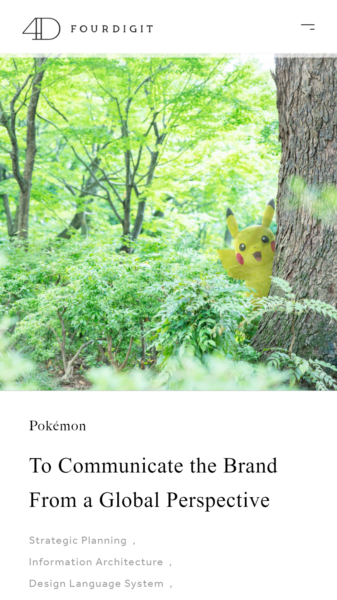

Rule of Thirds
FOURDIGIT Inc.
https://www.4digit.com/en The photo used in this website followed the rule of thirds with some balancing element on it. It effectively positioned the subject off the center but is also not a big problem for this image because the photographer also made sure to utilize some object to fill the empty space.
White Space and Clean Design
PlumbersStock
https://www.plumbersstock.comThe combination of the text and image with an empty background gave emphasis to the product. Using the white spaces has directed the viewer to only focus on the product or the content. It looks clean, friendly to the viewer's eyes, and the image was nicely photoshoped.
Contrast
South West Plumbing
https://www.swplumbing.comThe website uses an image as a background. Like many people who struggles to choose a color that allows readers or viewers to see both the design and the content easily, this website has done a great job using appropriate color background for the text to contrast the background image.